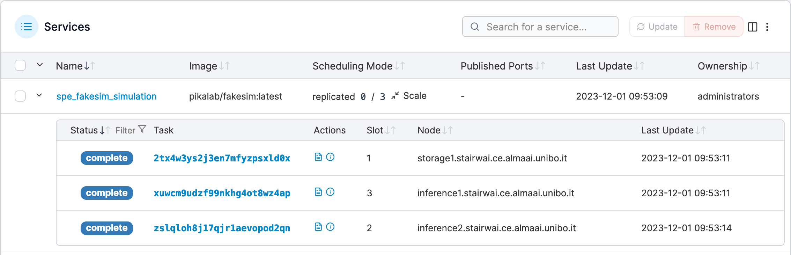

Containerisation and Orchestration
Software Process Engineering
Giovanni Ciatto — giovanni.ciatto@unibo.it
Compiled on: 2024-12-21 — printable version
Preliminaries
[Software] Deployment $:=$ all of the activities that make a software system available for use
General need in Software Engineering
To govern the deployment of software systems onto some infrastructure
-
software system: multiple interacting software components, each one having its computational requirements
- component $\approx$ process
-
infrastructure: the available hardware and software substratum supporting the execution of software components
- hardware $\approx$ CPU, memory, storage, network
- software $\approx$ operating system, drivers, runtimes, libraries
-
deployment: orderly instantiating software components onto the infrastructure, while
- satisfying the computational requirements of each component
- optimising the exploitation of the infrastructural facilities
What to deploy? (pt. 1)
-
Short-lived tasks (a.k.a. jobs): tasks which eventually terminate
- e.g. data processing or generation tasks
- e.g. simulations
-
Long-lived tasks (a.k.a. services) tasks which run indefinitely
- e.g. web servers
- e.g. databases
What to deploy? (pt. 2)
Short-lived tasks
Short-lived tasks are bare computational activities aimed at processing/generating some data
-
Pure algorithms accepting data as input and/or producing data as output.
-
They will eventually reach their natural termination
- without requiring external intervention
-
Common workflow:
- users provide the code and the input data,
- they start the task,
- they are interested in getting the output data
-
Parallelism may be exploited to speed up the computations
What to deploy? (pt. 3)
Long-lived tasks
Long-lived are computational activities which are not meant to terminate automatically (unless explicitly stopped)
-
Infinite loops, just waiting for requests, and serving them as soon as possible
-
Interactivity is a key aspect:
- clients interact with the service,
- the service reacts to the clients’ requests
- clients may be humans or other software components
-
Common workflow:
- users provide the code and some deployment-automation script
- they start the task,
- they are interested in interacting with the service
- e.g. via the shell, via some GUI, via the browser, etc.
-
Parallelism may be exploited to support replication
- e.g. for fault tolerance
- e.g. for load balancing
- e.g. for scaling
Execution context of a computational task
Regardless of their life-span, computational tasks may require computational resources of various sorts:
-
specific hardware capabilities
- e.g. quick / multi-core CPUs for computation intensive tasks
- e.g. GPUs for tasks requiring parallelism
- e.g. primary memory (RAM)
- e.g. large / quick storage (SSD, HDD, etc.)
- e.g. quick networks connection (e.g. optical fiber)
-
specific operative systems (Linux, MacOS, Windows, etc.) or specific architectures (x86, ARM, etc.)
-
specific runtime platforms (e.g. JVM, Python, .NET etc.)
-
specific infrastructural components (e.g. database, reverse proxy, load-balancer, broker, etc.)
-
specific libraries (e.g. CUDA,
numpy, etc.)
The need for encapsulation (pt. 1)
Why can’t we simply configure bare-metal machines to host our tasks?
-
Need for multi-tenancy (i.e. sharing) on computational resources
- one may have $N$ machines and $M$ applications…
- … and be willing to decouple applications from machines
- different software components may have incompatible HW / SW requirements
- one may have $N$ machines and $M$ applications…
-
Need for isolation
- preventing spurious interactions among different tenants
- a common requirement in multi-tenant scenarios
-
Need to formalize / control / reproduce the computational environment of applications
- formalisation is a pre-requisite for automation
- automation enables control and scale
-
Need to automate deployment of applications into production / testing environments
- this is the immediate benefit for engineers
-
Need for flexibility (in re-deployment), and scalability
- effort minimisation for application startup or transfer
The need for encapsulation (pt. 2)
Some abstraction is needed to encapsulate applications, and their computational environment, into a single unit
Encapsulation is the hiding of the implementation details of a component from its clients. Encapsulated components have a clear interface which is the only way to interact with them.
How to achieve encapsulation? (pt. 1)
-
Virtual machines (VM) on top of VM hypervisors (VMH)
-
Containers on top of container engines (CE)
How to achieve encapsulation? (pt. 2)
Virtual machines and hypervisors (VMH)
-
VMH run on/as the OS of a bare-metal machine, abstracting HW and SW peculiarities away
- VM have virtualised HW and SW resources, different from the host’s ones
-
VMH may instantiate multiple VM on the same physical machine
- partitioning actual resources ahead of time
-
each VM runs its own OS, and may host multiple applications
- in the eyes of the user, the VM is undistinguishable from a bare-metal machine
-
VM may be paused, snapshot (into file), resumed, and possibly migrated
- snapshots are files containing the whole file-system of the VM
-
VM are coarse-grained encapsulation units
- they are heavy-weight (GBs)
- they are slow to start, run, migrate, snapshot
- VM commonly encapsulate multiple application-level components
- database, server, plus all their runtimes and libraries, etc.
-
Many industry-ready technologies:
- VMWare, VirtualBox, KVM, Xen, Hyper-V, QEMU, Proxmox, etc.
How to achieve encapsulation? (pt. 3)
Containers and container engines (CE)
-
CE run on the OS of a bare-metal/virtual machine, abstracting the runtime, storage, and network environment away
- the CPU, memory, OS kernel, drivers, and hardware are not virtualised
-
one may instantiate multiple containers on the same machine
- sharing the actual resources dynamically (overbooking support)
-
each container shares the OS kernel of the host, yet having its own runtime(s), storage, and network facilities
- in the eyes of the user, the container is a process running on top of a minimal OS
-
each container is instance of an image, i.e. a read-only template containing deployment instructions
- differences w.r.t. that image constitute the state of the container (these can be snapshot into file of minimal size)
-
containers are fine-grained encapsulation units
- they are light-weight (MBs)
- they are fast to start, run, snapshot
- they are commonly used to encapsulate single application-level components
- e.g. a database instance, a web-server instance, etc.
- the final application should consist of several, inter-communicating containers
-
Many industry-ready technologies:
- Docker, LXC, LXD, Podman, etc.
Bare-metal vs. VMs vs. Containers
Containers provide runtime isolation without operating system replication
Lightweight virtual machines?

Closer to confined processes

Scaling up to the cluster level
Cluster $\approx$ a set of similarly configured machines (a.k.a. nodes) interconnected via a network in order to let users exploit their joint computational power
-
Users may want to deploy their applications on the cluster
- by means of a single access point
- e.g. a Web dashboard, or a CLI
- by means of a single access point
-
Deployment shall allocate tasks on the cluster efficiently
- meeting the tasks’ computational requirements
- balancing the load among the nodes
- matching requirements on actual capabilities of nodes
-
Infrastructure-as-a-service (IaaS) cloud technologies support deploying tasks on clusters, as VM
- e.g. OpenStack, VSphere, etc.
-
Container orchestrators support deploying tasks on clusters, as containers
- e.g. Kubernetes, Docker Swarm, etc.
Why containers? (pt. 1)


Why containers? (pt. 2)
- more fine-grained encapsulation (than VM)
- faster to start, stop, snapshot, migrate (w.r.t. VM)
- more modular, more scalable (than VM)
- useful for dev-ops, and CI/CD
- most-likely, it’s the future of cloud computing
Containerisation vs. Orchestration
-
Containerisation $\approx$ the process of encapsulating an application into a container
-
Orchestration $\approx$ the process of deploying one or more container onto one or more machines
-
Containerisation is a pre-requisite for orchestration
-
Two syntaxes involved:
- one to containerise (i.e. create container images)
- one to orchestrate (i.e. deploy containers)
Main abstractions
Encapsulation level
- Container: a sandbox for running a process and its computational environment
- Image: a template for creating containers
- Layer: a single, cacheable, step in the creation of an image
- Host: the machine hosting the containers
- Registry: a repository of images (possibly external w.r.t. the host)
- Network: a virtual network for connecting containers (among each others and with the host)
- Volume: a bridge for letting containers share data with the host
- Engine (a.k.a. daemon): the software running on the host, managing containers, images, volumes, layers, and networks
Orchestration level
- Cluster: a set of machines, joint together by the same container orchestrator
- Node: a machine in the cluster (each one acting as a host, and running the container engine)
- Service: a set of replicas of the same container
- Stack: a set of inter-related services
- Secret: encrypted information to be made available on containers
About technologies
Docker: the most famous container technology, actually consisting of several components
- Docker Engine: the container engine managing containers and images, locally
- Docker CLI: the command line interface for Docker Engine (this is what you use)
- Docker Desktop: a GUI for Docker Engine, mostly for inspection purposes
- Docker Hub: the default registry for Docker images, available online
- Docker Compose: a tool for orchestrating containers on a single machine
- Docker Swarm: a tool for orchestrating containers on a cluster of machines

Configure Docker locally
- Install Docker
- https://docs.docker.com/engine/install/
- most commonly available on package managers
- [Linux only] Add your user to the
dockergroupsudo usermod -aG docker $USER- log out and log in again
- Enable and start the Docker service
- on most Linux distributions
sudo systemctl enable docker; sudo systemctl start docker - on MacOS and Windows, start the Docker Desktop application
- on most Linux distributions
- Test your installation
docker run hello-world
- Explore admissible sub-commands with
docker --help- general command structure
docker <resource> <command> <options> <args>- sometimes, when it’s obvious,
<resource>can be omitted
- sometimes, when it’s obvious,
- general command structure
Subsequent examples work on Linux, but they should work on any platform
- provided that a
bashorzshshell is available
Running containers
- Pull an image:
docker pull adoptopenjdk - Run a container:
docker run adoptopenjdk
Every image provides a default command, running without options runs such default in a non-interactive terminal.
Running in interactive mode can be achieved with the -i option
Running a custom command inside the container can be achieved with writing the command after the image name
- e.g.,
docker run -i adoptopenjdk bash - parameters for the custom command can follow
- use the
toption to run in a pseudo-tty (always use it whenever you use-i) - use the
--rmto remove the container after use
Interaction with the outside world
A docker container runs in isolation, w.r.t. the host and other containers.
Environment variables, network ports, and file system folders are not shared.
Sharing must be explicit and requires options to be specified after docker run:
- Passing environment variables:
-e <name>=<value> - Mounting volumes:
-v <host>:<guest>:<options><host>is the path (or volume name) on the host system<guest>is the location where it will be mounted on the container<options>can be optionally specified as mount options (e.g.,rw,ro)
- Publishing ports:
-p <host>:<guest><host>is the port on the host system<guest>is the corresponding port on the container
Managing images
Every image has a unique ID, and may have an associated tag
The subcommand images lists the pulled images and their associated information
The subcommand image allows for running maintenance tasks, e.g.
docker image ls– same asdocker imagesdocker image prune– removes unused imagesdocker image rm– removes images by namedocker image tag– associates a tag to an image
Creating Docker images
Docker images are written in a Dockerfile
-
Every command inside a Dockerfile generates a new layer
-
The final stack of layers creates the final image
-
The
docker buildcommand interprets theDockerfilecommands to produce a sequence of layers -
Changes to a layer do not invalidate previous layers
Dockerfile syntax
# Pulls an image from docker hub with this name. Alternatively, "scratch" can be used for an empty container
FROM alpine:latest
# Runs a command
RUN apk update; apk add nodejs npm
# Copies a file/directory from the host into the image
COPY path/to/my/nodejs/project /my-project
# Sets the working directory
WORKDIR /my-project
# Runs a command
RUN npm install
# Adds a new environment variable
ENV SERVICE_PORT=8080
# Exposes a port
EXPOSE 8080
# Configures the default command to execute
CMD npm run service
to be built by means of the command: docker build -t PATH
PATHis the host path containing theDockerfile
Content of the path/to/my/nodejs/project DIRECTORY
-
Dockerfileas for the previous slide -
File
.dockerignore
node_modules/
- File
package.json
{
"name": "example",
"version": "1.0.0",
"description": "Example Express WS for exemplifying Docker usage",
"main": "index.mjs",
"scripts": {
"service": "node index.mjs"
},
"dependencies": {
"express": "^4.18.2"
},
"author": "gciatto",
"license": "ISC"
}
- File
index.mjs
import { env } from 'process'
import express from 'express'
import { randomBytes } from 'crypto'
const port = 'SERVICE_PORT' in env ? env.SERVICE_PORT : 8080
const hostname = 'HOSTNAME' in env ? env.HOSTNAME : 'localhost'
const serverID = randomBytes(8).toString('hex') // 8-char random string
const server = express()
let counter = 0
server.get('/', function (req, res) {
res.send(`[${serverID}@${hostname}:${port}] Hit ${++counter} times`)
})
console.log(`Service ${serverID} listening on ${hostname}:${port}`)
server.listen(port)
i.e. a Web service listening on the port indicated by the SERIVICE_PORT env var, showing Web pages of the form
[$SERVER_ID@$HOST_NAME:PORT] Hit $VIEW_COUNT times
Layers and caching (pt. 1)
Every line in a Dockerfile generates a new layer:

A layer is a diff w.r.t. the previous one
In other words, Docker keeps track of what information is added to the image at each step
Layers and caching (pt. 2)
When a Dockerfile is built, Docker checks whether the layer has already been built in the recent past
If so, it reuses the cached layer, and skips the execution of the corresponding command

Layers and caching (pt. 3)
When the container is run, the images layers are read-only, and the container has a read-write layer on top of them
So, when a container is stopped, the read-write layer is discarded, and the image layers are kept
In this way, the space occupied by the container is minimal
Naming images
Image naming is done via tags
-
The easiest way to do so is assigning tags at build time with the
-toptions ofdocker build -
The option can be repeated multiple times to make multiple tags
docker build -t "myImage:latest" -t "myImage:0.1.0" /path/to/Dockerfile/container -
latestis usually used to identify the most recent version of some image -
For instance, you may build the image from a few slides ago with:
docker build -t my-service path/to/my/nodejs/project- the image
my-service:latestis automatically created
- the image
Publishing Docker images
Images get published in registries
-
The most famous, free for publicly available images, is Docker Hub
-
By default, Docker uses Docker Hub as registry (both for
pullandpushoperations) -
Docker Hub requires registration and CLI login:
docker login docker.io
-
Once done, publication is performed via
push:docker push <image name>
Building Docker images in CI
-
Of course, as any other software, custom docker images should get built in CI
-
Several integrators use containers as build environments:
- it is possible to build a container using a container
-
More in general: there is no inherent limit to nesting containers
-
For instance:
- you may run DIND (Docker-in-Docker) via:
docker run --privileged --rm -it docker:dind - you may use the Docker CLI in a container:
docker run -it --rm docker:cli
- you may run DIND (Docker-in-Docker) via:
Volumes
Volumes are bridges between the host’s file system and the container’s one
Their support several use cases:
- sharing data between the host and the container
- persisting containers’ data
- sharing data among containers
Sorts of volumes (pt. 1)
- Bind mount: a host directory is mounted into the container
- the host directory is specified as
<host path>:<guest path>(both must be absolute paths)- e.g.
docker run -v /home/user/my-project:/my-project ...
- e.g.
- data present in
<host path>can be read within the container at<guest path> - data written within the container at
<guest path>can be accessed on<host path>- even after the container is stopped / deleted
- the host directory is specified as
Sorts of volumes (pt. 2)
- Named volume: virtual drives managed by Docker
- they are created with
docker volume create <name> - they are mounted into containers as
<name>:<guest path> - their content’s life span is independent of any container
- they can be attached to containers at run-time, referencing their name:
- e.g.
docker run -v my-volume:/my-project ...
- e.g.
- technically, they are just directories on the host’s file system, yet handled by Docker
/var/lib/docker/volumes/<name>/_data
- they are created with
Sorts of volumes (pt. 3)
- Tmpfs mount [Linux-only]: a temporary file system, living only as long as the container is alive
- it is mounted into containers as
tmpfs:<guest path> - it is useful for storing temporary data
- do not use it for sharing or persisting data
- it is like an anonymous, ephemeral named volume
- created by means of a
--tmpfsoption todocker run- e.g.
docker run --tmpfs <guest path> ...
- e.g.
- it is mounted into containers as
Example: containers’ data is ephemeral
-
Let’s open a Linux shell in a container:
docker run -it --rm alpine:latest sh -
Let’s create folder in there:
mkdir -p /data -
Let’s create a file in there:
echo "Hello world" > /data/hello.txt -
Does the file exist?
ls -la /data/ # ls -la /data total 12 drwxr-xr-x 2 root root 4096 Nov 2 09:28 . drwxr-xr-x 1 root root 4096 Nov 2 09:28 .. -rw-r--r-- 1 root root 5 Nov 2 09:28 hello.txt -
Let’s exit the container:
exit -
Let’s open a new shell in a new container:
docker run -it --rm alpine:latest sh -
Does the file exist?
ls -la /datals: /data: No such file or directory -
Why?
- the second
docker run ...command created a new container
- the second
Example: sharing data with bind mounts (pt. 1)
-
Let’s create a folder on the host:
mkdir -p $(pwd)/shared -
Let’s create 10 containers
- each one creating a file in
./shared/ - named
container-<i>.txt - containing random data from
/dev/random, encoded in base64
for i in $(seq 1 10); do docker run --rm -d \ # detached mode -v $(pwd)/shared:/data \ # bind mount --hostname container-$i \ # parametric hostname inside the container alpine sh -c \ 'cat /dev/random | head -n 1 | base64 > /data/$(hostname).txt' done - each one creating a file in
-
Let’s have at the shared directory:
ls -la ./sharedls -la ./shared totale 56 drwxr-xr-x 2 user user 4096 2 nov 10.51 . drwxr-xr-x 79 user user 12288 2 nov 10.56 .. -rw-r--r-- 1 root root 329 2 nov 10.51 container-10.txt -rw-r--r-- 1 root root 333 2 nov 10.51 container-1.txt -rw-r--r-- 1 root root 381 2 nov 10.51 container-2.txt -rw-r--r-- 1 root root 167 2 nov 10.51 container-3.txt -rw-r--r-- 1 root root 110 2 nov 10.51 container-4.txt -rw-r--r-- 1 root root 102 2 nov 10.51 container-5.txt -rw-r--r-- 1 root root 9 2 nov 10.51 container-6.txt -rw-r--r-- 1 root root 106 2 nov 10.51 container-7.txt -rw-r--r-- 1 root root 766 2 nov 10.51 container-8.txt -rw-r--r-- 1 root root 203 2 nov 10.51 container-9.txt
Example: sharing data with bind mounts (pt. 2)
- Things to notice:
- the files are owned by
root(inside the container) - the files are still owned by
rooton the host (outside the container)- despite the fact that the host user is
user - if
userhas no superuser privileges, they cannot delete the files
- despite the fact that the host user is
- when creating the container, bind mounts should be absolute paths
- hence the need for
$(pwd)to get the current working directory
- hence the need for
- the files are owned by
Example: sharing data with named volumes (pt. 1)
-
Let’s create a named volume:
docker volume create my-volume -
Same 10 containers as before, but using the named volume instead of the bind mount
for i in $(seq 1 10); do docker run --rm -d \ # detached mode -v my-volume:/data \ # reference to volume my-volume --hostname container-$i \ # parametric hostname inside the container alpine sh -c \ 'cat /dev/random | head -n 1 | base64 > /data/$(hostname).txt' done -
How to access the data now?
- by means of another container, attached to the same volume
- by means of the host, inspecting the volume’s file system
Example: sharing data with named volumes (pt. 2)
Accessing the volume from another container
- Let’s create yet another interactice container attached to the volume
docker run --rm -it -v my-volume:/data alpine sh
- Let’s have a look at the data:
ls -la /datatotal 48 drwxr-xr-x 2 root root 4096 Nov 2 10:15 . drwxr-xr-x 1 root root 4096 Nov 2 10:15 .. -rw-r--r-- 1 root root 608 Nov 2 10:14 container-1.txt -rw-r--r-- 1 root root 349 Nov 2 10:15 container-10.txt -rw-r--r-- 1 root root 369 Nov 2 10:14 container-2.txt -rw-r--r-- 1 root root 304 Nov 2 10:14 container-3.txt -rw-r--r-- 1 root root 240 Nov 2 10:14 container-4.txt -rw-r--r-- 1 root root 434 Nov 2 10:14 container-5.txt -rw-r--r-- 1 root root 150 Nov 2 10:14 container-6.txt -rw-r--r-- 1 root root 41 Nov 2 10:14 container-7.txt -rw-r--r-- 1 root root 33 Nov 2 10:15 container-8.txt -rw-r--r-- 1 root root 1212 Nov 2 10:15 container-9.txt
Example: sharing data with named volumes (pt. 3)
Accessing the volume from the host
-
Alternatively, let’s find where the volume is stored on the host
docker volume inspect my-volume
-
Let’s analyse the JSON description of the volume:
[ { "CreatedAt": "2023-11-02T11:13:56+01:00", "Driver": "local", "Labels": null, "Mountpoint": "/var/lib/docker/volumes/my-volume/_data", "Name": "my-volume", "Options": null, "Scope": "local" } ]
Example: sharing data with named volumes (pt. 4)
Accessing the volume from the host
-
The
Mountpointentry reveals the location of the volume on the host’s file system -
Let’s look into that position (may require super-user access rights):
-
sudo ls -la /var/lib/docker/volumes/my-volume/_datatotale 48 drwxr-xr-x 2 root root 4096 2 nov 11.15 . drwx-----x 3 root root 4096 2 nov 11.13 .. -rw-r--r-- 1 root root 349 2 nov 11.15 container-10.txt -rw-r--r-- 1 root root 608 2 nov 11.14 container-1.txt -rw-r--r-- 1 root root 369 2 nov 11.14 container-2.txt -rw-r--r-- 1 root root 304 2 nov 11.14 container-3.txt -rw-r--r-- 1 root root 240 2 nov 11.14 container-4.txt -rw-r--r-- 1 root root 434 2 nov 11.14 container-5.txt -rw-r--r-- 1 root root 150 2 nov 11.14 container-6.txt -rw-r--r-- 1 root root 41 2 nov 11.14 container-7.txt -rw-r--r-- 1 root root 33 2 nov 11.15 container-8.txt -rw-r--r-- 1 root root 1212 2 nov 11.15 container-9.txt
-
How to retain space from a volume?
Volumes are NOT automatically cleaned up when containers are deleted
-
Volumes must be explicitly deleted by the user
docker volume rm <volume name>
-
In our example, remember to delete
my-volume:docker volume rm my-volume- beware: this will delete all the data in the volume!
Sudo-powered containers
-
Sometimes one may be willing to let a container access the Docker daemon of its host
- this is useful for running containers that will: create/delete other containers, handle images, etc.
-
To achieve that one may exploit bind mounts
- to share the Docker daemon’s socket with the container
-
Explanation:
- on the host, the Docker daemon is just a service listening for commands on a Unix socket
- the socket is usually reified as a file on the host’s file system, at
/var/run/docker.sock - the
dockercommand is just a CLI program writing/reading to/from the socket to govern the daemon
-
One may simply create a Docker container with the Docker CLI tool installed on it
- and share the host’s Docker socket with that container via a bind mount
docker run -it --rm -v /var/run/docker.sock:/var/run/docker.sock --name sudo docker:cli sh
- and share the host’s Docker socket with that container via a bind mount
-
Inside that container one may run the
dockercommand as usual, to govern the host’s Docker daemon- e.g.
docker ps
CONTAINER ID IMAGE COMMAND CREATED STATUS PORTS NAMES 3d9016cd067e docker:cli "docker-entrypoint.s…" 5 seconds ago Up 3 seconds sudo - e.g.
Networks
Docker may virtualise container’s networking facilities
- network interfaces
- IP addresses
- layer-4 ports
This is useful to let containers communicate with any external entity
most commonly, other containers or the host
Networks are virtual entities managed by Docker
- they mimic the notion of layer-3 network
- in the eyes of the single container, they are virtual network interfaces
- overall, their purpose is to delimit the communication scope for containers
Sorts of networks (pt. 1)
Different sorts of networks are available in Docker, depending on the driver:
Sorts of networks (pt. 2)
Available drivers:
-
none: no networking facilities are provided to the container, which is then isolated
-
host: remove network isolation between the container and the Docker host, and use the host’s networking directly
-
bridge (default): a virtual network, internal to the host, letting multiple containers communicate with each other
-
overlay: a virtual network, spanning multiple hosts, letting multiple containers communicate with each other among different nodes of the same cluster
Other drivers are available as well, cf. https://docs.docker.com/network/drivers/
None network driver

-
No networking facilities are provided to the container at all, which is then isolated w.r.t the external world
-
This is useful for containers that do not need to communicate via the network
- i.e. they expose no service, and they must not access the Internet
- very rare situation
- i.e. they expose no service, and they must not access the Internet
-
Example:
docker run --network none -it --rm alpine sh/ # ping 8.8.8.8 PING 8.8.8.8 (8.8.8.8): 56 data bytes ping: sendto: Network unreachable
Host driver

-
No isolation between the container and the host
- the container uses the host’s networking facilities directly
-
The main consequence is that the container will be assigned with the same IP address as the host
- the layer-4 ports used by the container are also busy for the host
- high collision probability
- the layer-4 ports used by the container are also busy for the host
-
Example:
docker run --network host my-serviceService 540c3b7bb7860c6a listening on <your pc's hostname>:8080- try now to start a service on port 8080 on your host
- you should get an error message stating that port 8080 is already in use
- try now to start a service on port 8080 on your host
Bridge network (pt. 1)

-
Virtual network spanning through one or more containers on the same host
- containers attached to the same network can communicate with each other via TCP/IP
- each container may be attached to multiple networks
- e.g. one for internal communication, one for external communication
-
Each container gets assigned with a private IP address on the network
- commonly in the range
172.x.y.z - the IP address is contactable from the host
- commonly in the range
Bridge network (pt. 2)
To exemplify the usage of IP:
-
let’s create a container using the
my-serviceimage created a few slides agodocker run --network bridge -d --rm --name my-container my-service- this should be a service listening on port
8080 - we call the container
my-container - specifying
--network bridgeis useless, because that’s the default
-
let’s inspect the container’s IP address
docker inspect my-container | grep IPAddress- at the time of writing, the IP address is
172.17.0.2
- at the time of writing, the IP address is
-
open your browser and browse to
http://172.17.0.2:8080- you should see a page of the form:
[$SERVER_ID@$HOST_NAME:PORT] Hit $VIEW_COUNT times - the page is served by the container, contacted by IP
- so containes attached to
bridge-like networks can be contacted by IP, from the host
- you should see a page of the form:
-
try to contact the container:
- by host name, from the host
- this should not work $\Rightarrow$ no host-specific DNS resolution for containers
- by IP, from another host (in the same LAN of the host)
- this should not work $\Rightarrow$ bridge networks are host specific
- by host name, from the host
Bridge network (pt. 3)
Let’s create a non-trivial scenario with 2 container attached to the same network:
- one container (host name:
dind) will run the Docker daemon (Docker-in-Docker) - the other container (host name:
cli) will run the Docker CLI - let’s call the shared network
my-network
Bridge network (pt. 4)
-
let’s create the network:
docker network create --driver bridge my-network- a random string is returned: that’s the network’s ID
-
let’s create the daemon:
docker run --privileged -d --rm --network my-network --hostname dind docker:dind
-
let’s create the client:
docker run -it --rm --network my-network --hostname cli docker:cli-
inside
cli, let’s check ifdindis contactable by hostname:ping dind- this should work $\Rightarrow$ networks come with their own name resolution support
-
inside
cli, let’s check if the Docker client works:docker pserror during connect: Get "http://docker:2375/v1.24/containers/json": dial tcp: lookup docker on 127.0.0.11:53: no such host -
apparently the
docker:cliimage is preconfigured to contact a daemon on thedockerhostname
-
-
let’s stop
dind:- you can use
docker pson the host to get the name of thedindcontainer - then
docker stop <container name> - or
docker stop $(docker ps -q --filter ancestor=docker:dind)-q(quiet), only display container IDs--filter ancestor=Xselects containers whose image isX
- next time let’s give an explicit name to the container via
--name
- you can use
Bridge network (pt. 5)
-
let’s restart a Docker-in-Docker daemon, using the
dockerhostname:docker run --privileged -d --rm --network my-network --name dind --hostname docker docker:dind dockerd --host=tcp://0.0.0.0:2375- in general, it would be better to both
--name Xand--hostname X- same name and hostname to avoid confusion!
dockerd --host=tcp://0.0.0.0:2375is necessary to force the port the daemon will listen on- and to disable TLS security (not recommended in production)
-
let’s restart the client:
docker run -it --rm --network my-network --hostname cli docker:cli -
let’s run a command on the CLI, say
docker run hello-world- this should work $\Rightarrow$ the client is now able to contact the daemon via the
dockerhostname
- this should work $\Rightarrow$ the client is now able to contact the daemon via the
Exposing ports (pt. 1)
-
When a container wraps a service listening on layer-4 port…
- … the port is not accessible from the outside world
- … unless it is explicitly exposed by the container
-
When creating a Docker image, the
EXPOSEcommand in theDockerfileis used to declare ports exposed by default- e.g.
EXPOSE 8080
- e.g.
-
The port exposed by a container can be inspected via
docker ps- e.g.
docker run -d --rm my-service; docker ps
CONTAINER ID IMAGE COMMAND CREATED STATUS PORTS NAMES 7a14f3bf95cc my-service "/bin/sh -c 'npm run…" 1 second ago Up Less than a second 8080/tcp wonderful_goldwasser(look at the
PORTScolumn) - e.g.
Exposing ports (pt. 2)
-
When running a Docker container, the exposed port can be mapped to host’s ports via
-Poption- this would make any
EXPOSEd port in the image mapped to some random port of the host - e.g.
docker run -d --rm -P my-service; docker ps - the actual port mapping you should run
docker ps
CONTAINER ID IMAGE COMMAND CREATED STATUS PORTS NAMES b1470831b62b my-service "/bin/sh -c 'npm run…" 6 seconds ago Up 5 seconds 0.0.0.0:32773->8080/tcp, :::32773->8080/tcp sad_benz - this would make any
-
One may control the mapping of ports via the
-p <host port>:<guest port>option- e.g.
docker run -d --rm -p 8888:8080 my-service; docker ps - this would map the container’s port
8080to the host’s port8080
CONTAINER ID IMAGE COMMAND CREATED STATUS PORTS NAMES f034da93c476 my-service "/bin/sh -c 'npm run…" 4 seconds ago Up 3 seconds 0.0.0.0:8888->8080/tcp, :::8888->8080/tcp bold_booth - e.g.
Orchestration
With Docker Compose
Do we need orchestration?
Operating containers manually is error prone and low-level
-
Docker Compose lets you increase the abstraction level on the single machine
-
Starting from a user-provided specification of a stack…
- i.e. a set of containers, their images, their environment, their dependencies
-
… Docker Compose can:
- orderly start the containers up
- while creating all required networks and volumes
- and gracefully shut them down upon need
-
The only thing the user must do is: creating a
docker-compose.ymlfile- a YAML file describing the stack
- following the official specification
Docker Compose syntax by example (pt. 1)

The example application is composed of the following parts:
- 2 services, backed by Docker images:
webappanddatabase - 1 secret (HTTPS certificate), injected into the frontend
- 1 secret (DB credentials), injected into both services
- 1 configuration (HTTP), injected into the frontend
- 1 persistent volume, attached to the backend
- 2 networks
Docker Compose syntax by example (pt. 2)
version: 3.9 # version of the specification
services: # section defining services composing the stack
frontend: # name of the first service (frontend)
image: example/webapp # image to use for the first service
depends_on: # section for def
- backend # this should be started AFTER the backend service is healthy
environment: # section for environment variables
SERVICE_PORT: 8043 # env var dictating the port the service will listen on
DB_HOST: backend # env variable dictating the hostname of the backend service
# (equal to the service name)
DB_PORT: 3306 # env variable dictating the port the backend service will listen on
ports: # section for ports to be exposed / mapped on the host
- "443:8043" # exposing port 8043 of the container as port 443 of the host
networks: # section for networks to be attached to
- front-tier # attaching the service to the front-tier network (referenced by name)
- back-tier # attaching the service to the back-tier network (referenced by name)
# configs are files to be copied in the service' container, without needing to create a new image
configs: # section for configuration files to be injected in the container
- source: httpd-config # reference to the configuration file (by name)
target: /etc/httpd.conf # path on the container where the config file will be mounted as read-only
# secrets are reified as read-only files in /run/secrets/<secret_name>
secrets: # section for secrets to be injected in the service' container
- server-certificate # reference to the secret (by name)
- db-credentials # reference to the secret (by name)
# assumption: image example/webapp is programmed to look in /run/secrets/<secret_name>
# and load the secrets therein contained
backend: # name of the second service (backend)
image: example/database # image to use for the second service
# this is a command to be run inside the service to check whether it is healthy
healthcheck:
test: ["CMD", "command", "which", "should", "fail", "if", "db not healthy"]
interval: 1m30s
timeout: 10s
retries: 3
start_period: 40s
volumes: # section for volumes to be attached to the container
- db-data:/etc/data # the volume db-data (reference by name) will be mounted
# as read-write in /etc/data
networks:
- back-tier # attaching the service to the back-tier network (referenced by name)
secrets:
- db-credentials # reference to the secret (by name)
volumes: # section for volumes to be created in the stack
db-data: # name of the volume, to be referenced by services
driver_opts:
type: "none"
o: "bind" # this volume is a bind mount
device: "/path/to/db/data/on/the/host"
configs: # section for configuration files to be created in the stack
httpd-config: # name of the configuration file, to be referenced by services
file: path/to/http/configuration/file/on/the/host
secrets: # section for secrets to be created in the stack
server-certificate: # name of the secret, to be referenced by services
file: path/to/certificate/file/on/the/host
db-credentials: # name of the secret, to be referenced by services
external: true # this secret is not created by the stack, but it is expected to be created by the user
name: my-db-creds # name of the secret, as created by the user
networks:
# The presence of these objects is sufficient to define them
front-tier: {}
back-tier: {}
Orchestration-level notions (pt. 1)
Stacks
A stack is a set of inter-related services, networks, volumes, secrets, configs
- all of which are defined in a single
docker-compose.ymlfile - all of which are created / deleted / updated / started / stopped together
Services
From Docker Compose documentation:
- a service is an abstract definition of a computing resource within an application which can be scaled or replaced independently from other components
- they are backed by a set of containers, run by the orchestrator according to replication requirements and placement constraints
- they are backed by containers, hence they are defined by an image and set of runtime arguments
- all containers within a service are identically created with these arguments
- they are declared in the
servicessection of thedocker-compose.ymlfile- for each service, attributes may be spiecified, overriding the default behaviour of the image
- further attributes may be specified to declare dependencies on other services, volumes, networks, and so on
- these must be declared in the same
docker-compose.ymlfile
- these must be declared in the same
Orchestration-level notions (pt. 2)
Configs
From Docker Compose documentation:
- configs are files containing configuration data that can be injected into services upon instantiation
- they allow users to configure their services’ behaviour without the need to (re)build a (new) image
- they are read-only files, mounted into services’ containers, similarly to read-only volumes
- they are declared in the
configssection of thedocker-compose.ymlfile
Orchestration-level notions (pt. 3)
Configs
-
one config may either be created stack-wise out of a local file from the host…
configs: config_name: file: /path/to/config/on/the/host -
… or it can be manually created by means of the
docker config create [OPTIONS] NAME PATHcommand- in this case they can be referenced in several
docker-compose.ymlfiles:configs: config_name: external: true name: "the name used when creating the config" # this may be different than config_name
- in this case they can be referenced in several
-
in any case, the config’s mount point should be specified at the service level:
services: my-service: ... configs: - source: config_name # reference to the configs section (by YAML name) target: /path/to/config/on/the/container
Orchestration-level notions (pt. 3)
Secrets
From Docker Compose documentation:
-
secrets are configs containing sensitive data that should be kept secret
-
put it simply, Docker makes it harder to inspect the content of secrets both on the host
-
one secret may be either be created stack-wise out of a local file or an environment variable from the host…
secrets: secrets: secret_name: secret_name: file: "/path/to/secret/on/the/host" environment: "NAME_OF_THE_VARIABLE_ON_THE_HOST" -
… or it can be manually created by means of the
docker secret create [OPTIONS] NAME PATH|-command- in this case they can be referenced in several
docker-compose.ymlfiles:secrets: secret_name: external: true name: "the name used when creating the secret" # this may be different than secret_name
- in this case they can be referenced in several
-
in any case, the secret’s mount point should be specified at the service level:
services: my-service: ... secrets: # short syntax, mounted on /run/secrets/<secret_name> - secret_name # reference to the secrets section (by YAML name) # long syntax - source: secret_name # reference to the secrets section (by YAML name) target: /path/to/secret/on/the/container
Orchestration-level notions (pt. 4)
About secrets and configs
Important remark:
- in the eyes of the container, secrets and configs are just read-only files mounted on some
PATH - the containerised application is responsible for reading the secrets / configs from the mounted
PATH - when using somebody else’s image, you may expect the image to be programmed to read secrets / configs from customisable paths
- when creating your own image, you should make the application able to read secrets / configs from customisable paths
- e.g. via environment variables
Orchestration-level notions (pt. 5)
Volumes
From Docker Compose documentation:
- volumes in compose are no different than the ones we have already discussed
- they are declared in the
volumessection of thedocker-compose.ymlfile - one volume may be created stack-wise out of a local folder from the host…
volumes: volume_name: driver: local driver_opts: type: "none" o: "bind" device: "/path/to/folder/on/the/host" - … or maybe some remote folder exposed by some NFS service on the network
volumes: volume_name: driver: local driver_opts: type: "nfs" # meaning of options: https://wiki.archlinux.org/title/NFS#Mount_using_/etc/fstab o: "addr=NFS_SERVER_ADDRESS,nolock,soft,rw" # cf. nfs device: ":/path/on/the/nfs/server/"
Orchestration-level notions (pt. 6)
Volumes (cont’d)
-
… or it can be manually created by means of the
docker volume create [OPTIONS] NAMEcommand- in this case they can be referenced in several
docker-compose.ymlfiles:volumes: volume_name: external: true name: "the name used when creating the volume" # this may be different than volume_name
- in this case they can be referenced in several
-
in any case, the volume’s mount point should be specified at the service level:
services: my-service: ... volumes: - type: volume source: volume_name # reference to the volumes section (by YAML name) target: /path/to/folder/on/the/container # alternatively, one may define a service-specific bind mount on the fly - type: bind source: /path/to/folder/on/the/host target: /path/to/folder/on/the/container
Orchestration-level notions (pt. 7)
Networks
From Docker Compose documentation:
-
networks in compose are no different than the ones we have already discussed
-
they are declared in the
networkssection of thedocker-compose.ymlfile -
one network may be created stack-wise out of a local folder from the host…
networks: network_name: driver: overlay # default choice in swarm driver_opts: # many options, covering many advanced use cases for network engineering -
… or it can be manually created by means of the
docker network create [OPTIONS] NAMEcommand- in this case they can be referenced in several
docker-compose.ymlfiles:networks: network_name: external: true name: "the name used when creating the network" # this may be different than network_name
- in this case they can be referenced in several
-
in any case, the network’s mount point should be specified at the service level:
services: my-service: ... networks: - network_name # reference to the networks section (by YAML name)
Docker Compose commands
-
See all possibilities with
docker compose --help -
docker compose upstarts the stack- if the stack is not present, it is created
- if the stack is already present, it is updated
- if the stack is already present, and it is up-to-date, nothing happens
- interesting optional flags (see all with
--help)-d(detached mode): run containers in the background--waitwait for services to be running or healthy (implies detached mode)
-
docker compose downstops the stack- if the stack is not present, nothing happens
- if the stack is present, it is stopped
- interesting optional flags (see all with
--help)--remove-orphansremove containers for services not defined in the Compose file (e.g. residuals from previous versions)-vremove named volumes declared in the “volumes” section of the Compose file and anonymous volumes attached to containers
All commands assume a
docker-compose.ymlfile is present in the current working directory
Working example (pt. 1)
version: "3.9"
services:
db:
image: mariadb:latest
command: '--default-authentication-plugin=mysql_native_password'
volumes:
- db_data:/var/lib/mysql
restart: always
networks:
- back-tier
environment:
MYSQL_ROOT_PASSWORD: "..Password1.."
MYSQL_DATABASE: wordpress_db
MYSQL_USER: wordpress_user
MYSQL_PASSWORD: ",,Password2,,"
healthcheck:
test: [ "CMD", "healthcheck.sh", "--su-mysql", "--connect", "--innodb_initialized" ]
start_period: 1m
start_interval: 10s
interval: 1m
timeout: 5s
retries: 3
wordpress:
depends_on:
- db
image: wordpress:latest
volumes:
- wordpress_data:/var/www/html
ports:
- "8000:80"
restart: always
networks:
- back-tier
environment:
WORDPRESS_DB_HOST: db:3306
WORDPRESS_DB_USER: wordpress_user
WORDPRESS_DB_PASSWORD: ",,Password2,,"
WORDPRESS_DB_NAME: wordpress_db
volumes:
db_data: {}
wordpress_data: {}
networks:
back-tier: {}
Beware: this is unsafe as passwords are in clear text!
TODO
-
Copy-paste this code in a file named
your-dir/docker-compose.yml -
cd your-dir -
docker compose upand then inspect the logs -
open your browser and browse to http://localhost:8000
-
docker psand have a look to the running containers- and
docker network ls - and
docker volume ls
- and
-
Press
Ctrl+Cto stop the stack -
docker compose down --volumesto delete the stack
Working example (pt. 2)
-
Example of
docker compose uplogs:docker compose up [+] Building 0.0s (0/0) docker:default [+] Running 5/5 ✔ Network your-dir_back-tier Created 0.1s ✔ Volume "your-dir_wordpress_data" Created 0.1s ✔ Volume "your-dir_db_data" Created 0.0s ✔ Container your-dir-db-1 Created 0.8s ✔ Container your-dir-wordpress-1 Created 0.9s Attaching to db-1, wordpress-1 db-1 | 2023-11-23 14:24:57+00:00 [Note] [Entrypoint]: Entrypoint script for MariaDB Server 1:11.2.2+maria~ubu2204 started. db-1 | 2023-11-23 14:24:57+00:00 [Note] [Entrypoint]: Switching to dedicated user 'mysql' db-1 | 2023-11-23 14:24:57+00:00 [Note] [Entrypoint]: Entrypoint script for MariaDB Server 1:11.2.2+maria~ubu2204 started. db-1 | 2023-11-23 14:24:57+00:00 [Note] [Entrypoint]: Initializing database files wordpress-1 | WordPress not found in /var/www/html - copying now... wordpress-1 | Complete! WordPress has been successfully copied to /var/www/html wordpress-1 | No 'wp-config.php' found in /var/www/html, but 'WORDPRESS_...' variables supplied; copying 'wp-config-docker.php' (WORDPRESS_DB_HOST WORDPRESS_DB_NAME WORDPRESS_DB_PASSWORD WORDPRESS_DB_USER) wordpress-1 | AH00558: apache2: Could not reliably determine the server's fully qualified domain name, using 172.22.0.3. Set the 'ServerName' directive globally to suppress this message wordpress-1 | AH00558: apache2: Could not reliably determine the server's fully qualified domain name, using 172.22.0.3. Set the 'ServerName' directive globally to suppress this message wordpress-1 | [Thu Nov 23 14:24:58.289485 2023] [mpm_prefork:notice] [pid 1] AH00163: Apache/2.4.56 (Debian) PHP/8.0.30 configured -- resuming normal operations wordpress-1 | [Thu Nov 23 14:24:58.289516 2023] [core:notice] [pid 1] AH00094: Command line: 'apache2 -D FOREGROUND' db-1 | 2023-11-23 14:24:58 0 [Warning] 'default-authentication-plugin' is MySQL 5.6 / 5.7 compatible option. To be implemented in later versions. ...- notice that the outputs of the two containers are interleaved
-
Example of
docker pslogs:CONTAINER ID IMAGE COMMAND CREATED STATUS PORTS NAMES 4691a9641135 wordpress:latest "docker-entrypoint.s…" 9 minutes ago Up 9 minutes 0.0.0.0:8000->80/tcp, :::8000->80/tcp your-dir-wordpress-1 314feb9d42ab mariadb:latest "docker-entrypoint.s…" 9 minutes ago Up 9 minutes (healthy) 3306/tcp your-dir-db-1 -
Example of
docker network lslogs:NETWORK ID NAME DRIVER SCOPE b304d1ae5404 bridge bridge local 1bb39315ff98 host host local 03c8700dee6a none null local 470d81d26296 your-dir_back-tier bridge local
Working example (pt. 3)
Let’s make the stack more secure
-
Let’s create a file containing the DB root password, say
db-root-password.txt:echo -n "..Password1.." > your-dir/db-root-password.txt
-
Let’s create a file containing the DB user password, say
db-password.txt:echo -n ",,Password2,," > your-dir/db-password.txt
-
Let’s edit the stack as described on the right
version: "3.9"
services:
db:
...
environment:
...
MYSQL_ROOT_PASSWORD_FILE: /run/secrets/db_root_password
MYSQL_PASSWORD_FILE: /run/secrets/db_password
...
secrets:
- db_root_password
- db_password
wordpress:
...
environment:
...
WORDPRESS_DB_PASSWORD_FILE: /run/secrets/db_password
...
secrets:
- db_password
volumes:
db_data: {}
wordpress_data: {}
networks:
back-tier: {}
secrets:
db_password:
file: db_password.txt
db_root_password:
file: db_root_password.txt
Docker Compose for testing
-
Docker Compose is also useful for software testing
-
E.g. whenever the system under test relies on some infrastructural component
- e.g. a database, a message broker, a cache, etc.
-
Usual workflow for testing:
- start the component
- run the system under test
- stop the component
-
Docker Compose may be coupled with some test framework of choice to automate the process
Example: Docker Compose for testing + JUnit (pt. 1)
Domain model
Example: Docker Compose for testing + JUnit (pt. 2)
Implementation details
Example: Docker Compose for testing + JUnit (pt. 3)
class TestMariaDBCustomerRepository {
companion object {
@BeforeClass @JvmStatic fun setUpMariaDb() { TODO("start MariaDB via Docker Compose") }
@AfterClass @JvmStatic fun tearDownMariaDb() { TODO("stop MariaDB via Docker Compose") }
}
private val connectionFactory = MariaDBConnectionFactory(DATABASE, USER, PASSWORD, HOST, PORT)
private lateinit var repository: SqlCustomerRepository
@Before
fun createFreshTable() {
repository = SqlCustomerRepository(connectionFactory, TABLE)
repository.createTable(replaceIfPresent = true)
}
private val taxCode = TaxCode("CTTGNN92D07D468M")
private val person = Customer.person(taxCode, "Giovanni", "Ciatto", LocalDate.of(1992, 4, 7))
private val person2 = person.clone(birthDate = LocalDate.of(1992, 4, 8), id = TaxCode("CTTGNN92D08D468M"))
private val vatNumber = VatNumber(12345678987L)
private val company = Customer.company(vatNumber, "ACME", "Inc.", LocalDate.of(1920, 1, 1))
@Test
fun complexTestWhichShouldActuallyBeDecomposedInSmallerTests() {
assertEquals(
expected = emptyList(),
actual = repository.findById(taxCode),
)
assertEquals(
expected = emptyList(),
actual = repository.findById(vatNumber),
)
repository.add(person)
repository.add(company)
assertEquals(
expected = listOf(person),
actual = repository.findById(taxCode),
)
assertEquals(
expected = listOf(company),
actual = repository.findById(vatNumber),
)
repository.remove(vatNumber)
repository.update(taxCode, person2)
}
}
-
Unit thest for the
SqlCustomerRepositoryclass -
Requires an instance of MariaDB to be tested
-
Let’s use Docker Compose to start / stop MariaDB
-
Try to complete the implementation of the
setUpMariaDbandtearDownMariaDbmethods- use Java’s
ProcessBuilders to calldocker composecommands
- use Java’s
-
Template for Docker Compose files available among test resources
docker-compose.yml.template- does it require edits? why?
-
Code for the exercise:
Orchestration
With Docker Swarm
Building the cluster (theory)
- In a Docker Swarm cluster, there are two kinds of nodes:
- manager nodes, who coordinate the cluster by means of the RAFT consensus protocol
- they may also act as worker nodes
- worker nodes, who simply run containers
- manager nodes, who coordinate the cluster by means of the RAFT consensus protocol
- To set up a cluster, one must:
- initialise Swarm mode on one node of choice
- that will become the first manager node
- optionally, let other nodes join the cluster as worker nodes
- optionally, elevate some worker nodes to manager nodes
- this operation can only be done by a client connected to some manager node
- it is better to multiple manager nodes for redundancy
- it is better to have an odd number of manager nodes
- e.g. 3, 5, 7, etc.
- initialise Swarm mode on one node of choice
Building the cluster (practice)
-
On one node running the Docker deamon (say, the teacher’s machine), initialise Swarm mode as follows:
docker swarm init- this will output a command to be run on other nodes to join the cluster:
Swarm initialized: current node (<NODE_ID>) is now a manager. To add a worker to this swarm, run the following command: docker swarm join --token <SECRET_TOKEN> <NODE_ADDRESS>:2377 To add a manager to this swarm, run 'docker swarm join-token manager' and follow the instructions.
-
On other nodes running the Docker daemon (say students’ machines), initialise Swarm mode as follows:
docker swarm join --token <SECRET_TOKEN> <NODE_ADDRESS>:2377- where
SECRET_TOKENandNODE_ADDRESSare the ones provided by thedocker swarm initcommand above
- where
-
On the master node, one may inspect the node composition of the cluster via
docker node lsID HOSTNAME STATUS AVAILABILITY MANAGER STATUS ENGINE VERSION 4q3q3q3q3q3q3q3q3q3q3q3q3q * node-1 Ready Active Leader 24.0.7 5q4q4q4q4q4q4q4q4q4q4q4q4q node-2 Ready Active 24.0.7 6q5q5q5q5q5q5q5q5q5q5q5q5q node-3 Ready Active 24.0.7 -
The master node may promote other nodes to manager nodes via
docker node promote <NODE_ID>…- and it may demote manager nodes to worker nodes via
docker node demote <NODE_ID> - it also may remove nodes from the cluster via
docker node rm <NODE_ID>
- and it may demote manager nodes to worker nodes via
-
Whenever done with this lecture, one may leave the Swarm via
docker swarm leave --force- recall to do this after the lecture, otherwise you won’t be able to use Swarm at home!
Building the cluster (troubleshooting)
Things that may go wrong
-
There may be a firewall blocking the communication among nodes
- e.g. Windows Defender, the lab’s firewall, your home router’s firewall, etc.
- you may notice the presence of a firewall by the fact that
docker swarm joinhangs or fails with a timeout- in lack of a firewall, the command should succeed or fail almost immediately
- troubleshouting:
- identify which and how many firewalls are in place
- ensure that the firewall allows communication for Docker Swarm ports
- commonly:
2377/tcp,7946/tcp,7946/udp,4789/udp
- commonly:
-
You use Docker on Windows or Mac, hence the Docker daemon runs on a virtual machine
- in this chase the IP of the virtual machine is different than the IP of your machine
- the
NODE_ADDRESSindocker swarm join --token <SECRET_TOKEN> <NODE_ADDRESS>:2377returned bydocker swarm initis the IP of the virtual machine - troubleshouting:
- find the actual IP of your machine (e.g.
ipconfigon Windows,ifconfigon Mac), let’s call itACTUAL_IP - configure your host to redirect Swarm traffic received by
ACTUAL_IPtowardsNODE_ADDRESS- for all ports listed above (
2377,7946,4789)
- for all ports listed above (
- let other nodes use
ACTUAL_IPinsteaf ofNODE_ADDRESSindocker swarm joinwhen joining the cluster
- find the actual IP of your machine (e.g.
Troubleshouting example on Windows
Opening ports on Windows Defender
On an administrator Powershell, run the following commands:
netsh advfirewall firewall add rule name="Docker Swarm Intra-manager" dir=in action=allow protocol=TCP localport=2377
netsh advfirewall firewall add rule name="Docker Swarm Overlay Network Discovery TCP" dir=in action=allow protocol=TCP localport=7946
netsh advfirewall firewall add rule name="Docker Swarm Overlay Network Discovery UDP" dir=in action=allow protocol=UDP localport=7946
netsh advfirewall firewall add rule name="Docker Swarm Overlay Network Traffic" dir=in action=allow protocol=UDP localport=4789
- this operation should be done on all nodes of the cluster running on Windows
Forwarding ports on Windows
On an administrator Powershell, run the following commands:
netsh interface portproxy add v4tov4 listenport=2377 listenaddress=$ACTUAL_IP connectport=2377 connectaddress=$NODE_ADDRESS
netsh interface portproxy add v4tov4 listenport=7946 listenaddress=$ACTUAL_IP connectport=7946 connectaddress=$NODE_ADDRESS
netsh interface portproxy add v4tov4 listenport=4789 listenaddress=$ACTUAL_IP connectport=4789 connectaddress=$NODE_ADDRESS
- this operation should be done on the very first master node of the cluster, if it’s running on Windows
Stacks on Swarms
-
One may deploy a stack on a Swarm cluster via
docker stack deploy -c <COMPOSE_FILE_PATH> <STACK_NAME>- where
COMPOSE_FILE_PATHis the path to a.ymlfile following the Docker Compose syntax - and
STACK_NAMEis the name of the stack to be deployed
- where
-
The command must be run on a client connected to some manager node
- try to run it on a worker node and see what happens
- try to run it on a manager node when 50% of the nodes are down and see what happens
-
Other operations one may do on stacks (via a master node):
docker stack lsto list stacksdocker stack ps <STACK_NAME>to list containers in a stackdocker stack services <STACK_NAME>to list services in a stackdocker stack rm <STACK_NAME>to remove a stack
-
Semantics of stack deployment on Swarms is different than Docker Compose:
- different services may be allocated on different nodes
- services may be replicated on different nodes
- networks must rely on the
overlaydriver, to support inter-node communication among containers
Stack Deploy Example: Portainer
version: '3.2'
services:
agent:
image: portainer/agent:latest
volumes:
- /var/run/docker.sock:/var/run/docker.sock
- /var/lib/docker/volumes:/var/lib/docker/volumes
networks:
- agents_network
deploy:
mode: global # i.e., one (and only one) replica per node
webservice:
image: portainer/portainer-ce:latest
command: -H tcp://tasks.agent:9001 --tlsskipverify
ports:
- "443:9443"
- "9000:9000"
- "8000:8000"
volumes:
- portainer_data:/data
networks:
- agents_network
deploy:
mode: replicated
replicas: 1
placement:
constraints:
- node.role == manager
networks:
agents_network:
driver: overlay
attachable: true
volumes:
portainer_data:
-
Portainer is a Web-based dashboard for cluster administration
- it works with both Docker Swarm and Kubernetes
-
It is composed of two services:
webservice, the actual dashboardagent, a service running on each node, which exposes the Docker API to thewebserviceservice
-
Let’s save the code on the left in a file named
portainer.yml -
Let’s deploy the stack via
docker stack deploy -c portainer.yml portainer -
Let’s then browse to https://localhost on some master node
Portainer’s Initial Configuration

let’s use software-process-engineering as password for the admin user
Portainer’s Home Page
Upon login, one is presented with the home page, asking you to select one enviroment
- environments are clusters (one Portainer instance may manage multiple clusters)

Portainer’s Dashboard
Upon environment selection, one is presented with the dashboard, showing the status of the cluster

Things to notice via Portainer
After selecting the only environment available, one may observe:
-
which and how many nodes compose the cluster (Dashboard section)
- you may use the cluster visualiser to spot your machien in the cluster
- (assuming that you managed to join the cluster)
- you may use the cluster visualiser to spot your machien in the cluster
-
which stacks are running on the cluster (Services section)
- you may observe that the
portainerstack is running
- you may observe that the
-
which services are running on the cluster (Services section)
- you may observe that the
portainerstack is composed of two services:agentandwebservice
- you may observe that the
-
which containers are running on the cluster (Containers section)
- you may observe that the
portainer_agentservice is composed by one container per node - you may observe that the
portainer_webserviceservice is composed by one container which is running on some master node
- you may observe that the
-
which volumes are present on the cluster (Volumes section)
- you may observe that the
portainer_portainer_datavolume is present on the same master node ofportainer_webservice
- you may observe that the
-
which networks are present on the cluster (Networks section)
- you may observe that the
portainer_agents_networknetwork is present, using theoverlaydriver
- you may observe that the
Labelling nodes
Nodes may be labelled with
key=valuepairs
-
Labels may be used to mark nodes with respect to their properties
- e.g. hardware / software capabilities
- e.g.
capabilities.cpu=yes - e.g.
capabilities.web=yes - e.g.
capabilities.storage=yes
- e.g.
- e.g. hardware / software capabilities
-
This can be done programmatically….
- e.g. via
docker node update --label-add KEY=VALUE NODE_ID
- e.g. via
-
… or via Portainer:

-
labels can be used to set placement constraints or preferences for services:
- placement constraints: one service can only be deployed onto nodes with given labels
- placement preferences: one service’s replicas will be spreaded among nodes with given labels
Example of placement constraints
version: "3.9"
services:
db:
image: mariadb:latest
...
deploy:
placement:
constraints:
- node.labels.capabilities.storage==yes
wordpress:
depends_on:
- db
image: wordpress:latest
ports:
- "8889:80"
...
deploy:
placement:
constraints:
- node.labels.capabilities.web==yes
volumes:
db_data: {}
wordpress_data: {}
networks:
back-tier: {}
-
Let’s define a stack for Wordpress, with placement constraints
dbservice on a node with storage capabilitieswordpressservice on a node with web capabilities
-
On the
starwaicluster:- node
storage1.stairwai.ce.almaai.unibo.ithas storage capabilities - node
inference2.stairwai.ce.almaai.unibo.ithas web capabilities
- node
-
The deployment is as follows:
Exposing ports on the Swarm
When a service exposes a port, and that’s deployed on a Swarm:
-
the service is exposed on all master nodes in the Swarm
-
so, the
wordpressservice above could be visited from several URL: -
… as well as from the node which is actually hosting the service:
Service replication
-
Services may be replicated for the sake scalability / load-balancing / fault-tolerance, etc.
-
Two types of services:
global: replicated exactly once per nodereplicated: replicatedNtimes (withN=1by default)
-
General case:
services: service-name: ... deploy: mode: replicated replicas: N # this should be a number! placement: constraints: - node.role == manager - node.labels.mylabel=myvalue preferences: - spread: node.labels.mylabel max_replicas_per_node: M # this should be a number! -
How to read it:
Nreplicas of the service will be deployed- each one will be deployed on a manager node having the
mylabellabel set tomyvalue - replicas will be evenly spreaded among the admissible nodes, possibly evenly
- no more of
Mreplicas will be put on the same node
Example of placement preferences
version: "3.9"
services:
ws:
image: pikalab/hitcounter:latest
ports:
- "8890:8080"
deploy:
replicas: 10
placement:
constraints:
- node.labels.capabilities.cpu==yes
preferences:
- spread: node.labels.capabilities.cpu
-
Try to query it multiple times:
while true; do INT ✘ curl http://clusters.almaai.unibo.it:8890; echo sleep 1 doneexpected outcome:
[9a6f89a39f8fd379@a3838ab6a606:8080] Hit 1 times [26c39b9f3d7f0cab@4ad25c3e148c:8080] Hit 1 times [97945332d20e71ed@969586109dee:8080] Hit 1 times [3b3256852103312a@5d3479044fac:8080] Hit 2 times [49e75aaae823c1e4@36e31b946486:8080] Hit 2 times [497583c21d17ad58@7c10a84858f3:8080] Hit 2 times [cf82689c910dfdf3@8aaa34535824:8080] Hit 2 times [9a456666c413f4a4@5ba876916f68:8080] Hit 2 times [41cadc9e0d7b0225@6cf54f65cda6:8080] Hit 2 times [84dbbff08ac91e74@4006352af1e0:8080] Hit 2 times [9a6f89a39f8fd379@a3838ab6a606:8080] Hit 2 times [26c39b9f3d7f0cab@4ad25c3e148c:8080] Hit 2 times [97945332d20e71ed@969586109dee:8080] Hit 2 times [3b3256852103312a@5d3479044fac:8080] Hit 3 times [49e75aaae823c1e4@36e31b946486:8080] Hit 3 times ...
-
Serval replicas of the same service are created:
- Requests will be forwarded to replicas in a non-deterministc fashion
Docker Swarm and Volumes
Volumes are always local w.r.t. the node the current container is deployed onto
version: "3.9"
services:
simulation:
image: pikalab/fakesim:latest
restart: on-failure
deploy:
replicas: 3
placement:
constraints:
- node.labels.capabilities.cpu==yes
max_replicas_per_node: 1
volumes:
- type: volume
source: shared_volume
target: /data
volumes:
shared_volume: {}
-
Several replicas of the simulation are created…

-
… as well as several volumes!
- one per replica, on the same node of the replica
-
How to share data?